Next: Clusters and Models Complexity Up: Friends-and-Enemies Initialization Previous: Friends-and-Enemies Initialization Contents
The proposed initialization algorithm, called friends-and-enemies
initialization, is designed to split the acoustic data to be
processed into  clusters, where
clusters, where  is determined
beforehand by the algorithm presented in
4.2.2 or manually set by the user. In the
agglomerative clustering scheme presented for the meeting domain,
it corresponds to the initial number of clusters used to start the
agglomerative process. Each of the resulting initial clusters has
a duration which is not restricted to be equal to any other
cluster.
is determined
beforehand by the algorithm presented in
4.2.2 or manually set by the user. In the
agglomerative clustering scheme presented for the meeting domain,
it corresponds to the initial number of clusters used to start the
agglomerative process. Each of the resulting initial clusters has
a duration which is not restricted to be equal to any other
cluster.
The complete initialization is composed of three distinct blocks,
as shown in Figure 4.6. The first block performs a
speaker-change detection on the acoustic data to identify segments
with a high probability of containing only one acoustic event.
Such acoustic events can either be silence, various noises, an
individual speaker or various speakers overlapping each other.
This first step is performed using the modified Bayesian
Information Criterion (BIC) metric (introduced by
Ajmera and Wooters (2003)) computed between two models created
from the data in two adjacent windows of size 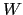, connected at
the evaluated possible change point. The modified  BIC
metric is computed over all the acoustic data every 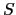 frames. A
possible change point is selected if 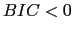, it corresponds to
a local minimum of the
BIC
metric is computed over all the acoustic data every 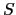 frames. A
possible change point is selected if 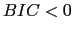, it corresponds to
a local minimum of the  BIC values around it, and there is
no other possible change point with smaller
BIC values around it, and there is
no other possible change point with smaller  BIC value
which is closer than 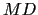 frames to it. In the implementation
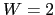 second windows are used, with a scroll 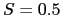 seconds.
Each window is modeled using a model with 5 Gaussian mixtures
(therefore with 10 Gaussians for the combined model) and a of
3 seconds, equal to the minimum speaker turn duration used in the
following agglomerative-clustering process.
BIC value
which is closer than 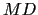 frames to it. In the implementation
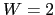 second windows are used, with a scroll 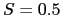 seconds.
Each window is modeled using a model with 5 Gaussian mixtures
(therefore with 10 Gaussians for the combined model) and a of
3 seconds, equal to the minimum speaker turn duration used in the
following agglomerative-clustering process.
The second block in the initialization algorithm creates clusters
by identifying the segments defined in the first part as friends
or enemies of each other. It is considered that two given acoustic
segments are friends if they contain acoustically homogeneous
data; only the best friends are brought together to form a
cluster. In the same way, it is considered that two segments are
enemies if they contain very dissimilar acoustic data. It is
intended to obtain  final enemy groups (the desired final
number of clusters) consisting of 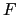 segments each, which are
friends of each other. Three different similarity metrics were
experimented with to compare each segment pair 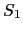 and
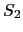. On the first place a geometric mean of the frame
cross-likelihood as
final enemy groups (the desired final
number of clusters) consisting of 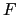 segments each, which are
friends of each other. Three different similarity metrics were
experimented with to compare each segment pair 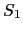 and
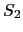. On the first place a geometric mean of the frame
cross-likelihood as
where 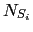 is the number of frames in segment
 , and
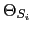 is a model with 5 Gaussian Mixtures
trained with 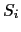.
, and
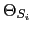 is a model with 5 Gaussian Mixtures
trained with 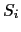.
The second metric normalizes each term by the number of frames in the linear domain instead, resulting in a penalty to the cross-likelihood as
The third metric does a full cross-likelihood as introduced by Rabiner in Juang and Rabiner (1985)
All three metrics are bigger the closest the segments are to each other. In order to initiate the process one needs to define an initial segment. Again, three criteria have been considered:
Figure 4.6 shows an example case on how the algorithm works. In the horizontal axis the speaker segments as found by the first block, are represented. The vertical axis shows the distance value associated to each segment. In step (0) the initial segment needs to be determined. In this example the criterion 2 is used to find the segment with smallest averaged likelihood, .
Then, in step (1a) the data in is used to train a model with 5 Gaussian mixtures ( 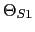) and compute either metric 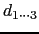 between itself and all other segments. The 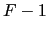 segments with bigger value are its friends. In this example, 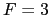 and the selected friends for are chosen to be 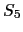 and 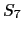. In step (1b), a new model is trained from all data in this first cluster ( 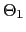) and the same metric as before is computed, except that now it is measured between all segments in the model and each of the remaining segments.
A new enemy is selected as the segment with smaller value
to the first cluster. Also in the same way, in step (2a)
friends are chosen for and in (2b) we select a new enemy
for both previously established clusters. This is done by
computing the sum of the used metric for each segment given all
predefined groups. The processing continues until the desired
number of initial clustering  is reached or it runs out of free
segments.
is reached or it runs out of free
segments.
At that point in the third block all created models are used to
reassign the acoustic data into the  classes. This is
done using a Viterbi decoding where the resulting segmentation is
not constrained to the predefined speaker changes, therefore any
previous speaker change detection errors can be corrected. All
data gets assigned to its closest cluster, classifying any
acoustic frames not assigned in the previous block. Finally, one
cluster model is trained from each of the resulting clusters.
classes. This is
done using a Viterbi decoding where the resulting segmentation is
not constrained to the predefined speaker changes, therefore any
previous speaker change detection errors can be corrected. All
data gets assigned to its closest cluster, classifying any
acoustic frames not assigned in the previous block. Finally, one
cluster model is trained from each of the resulting clusters.
user 2008-12-08